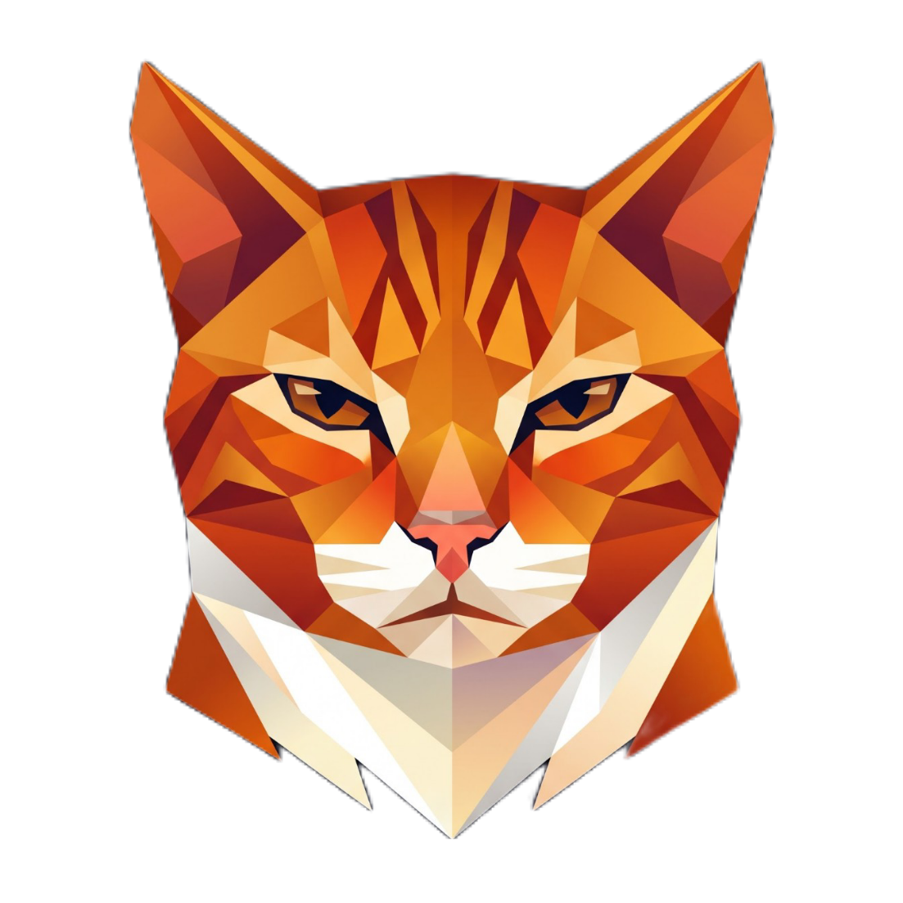

Ziy
Two choices to start. You can change both later; importing your bookmarks and settings is coming in a later update.

Two choices to start. You can change both later; importing your bookmarks and settings is coming in a later update.